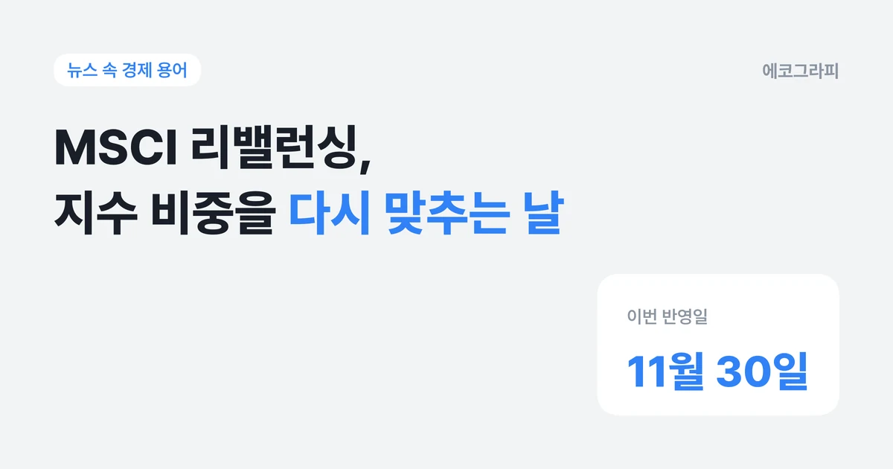
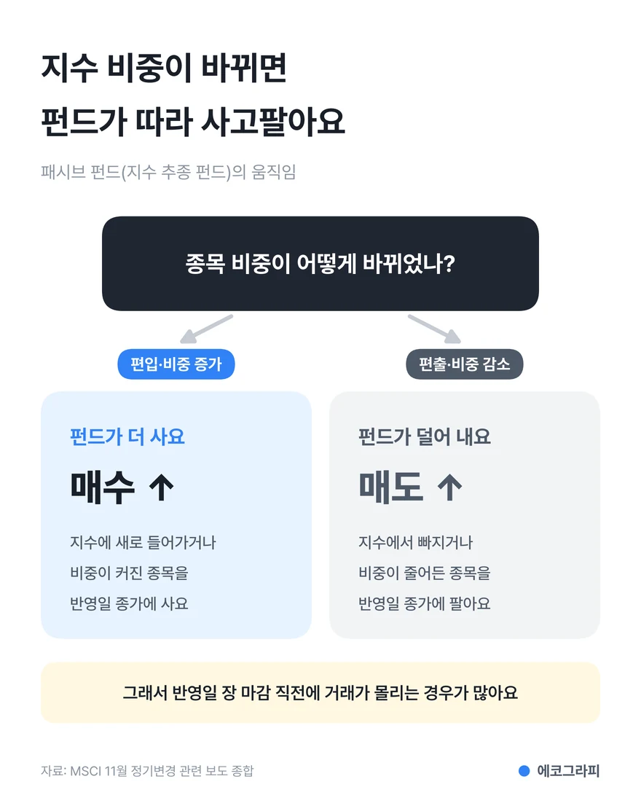
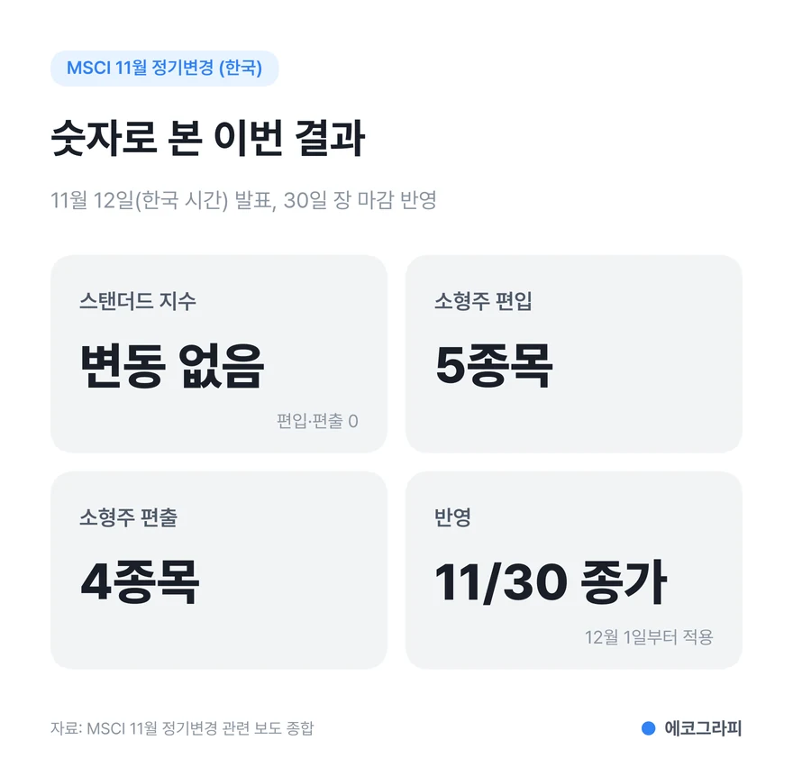
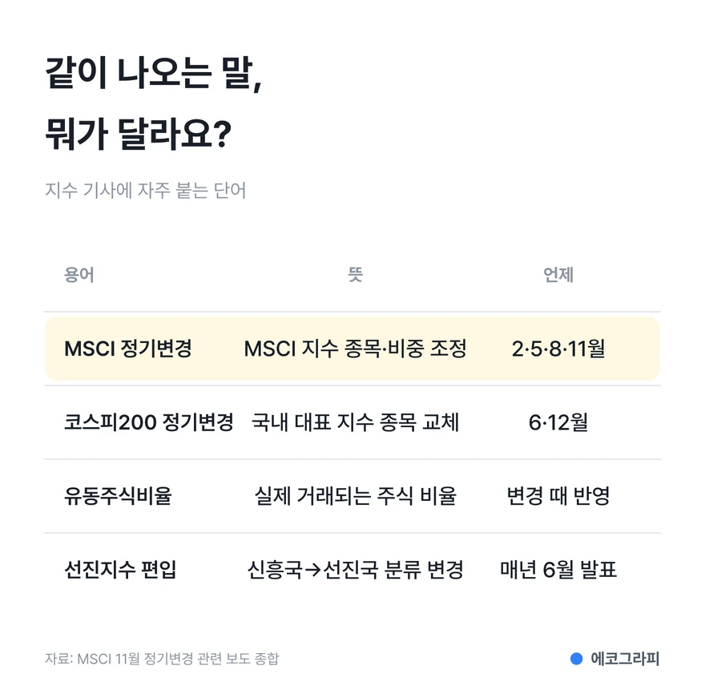
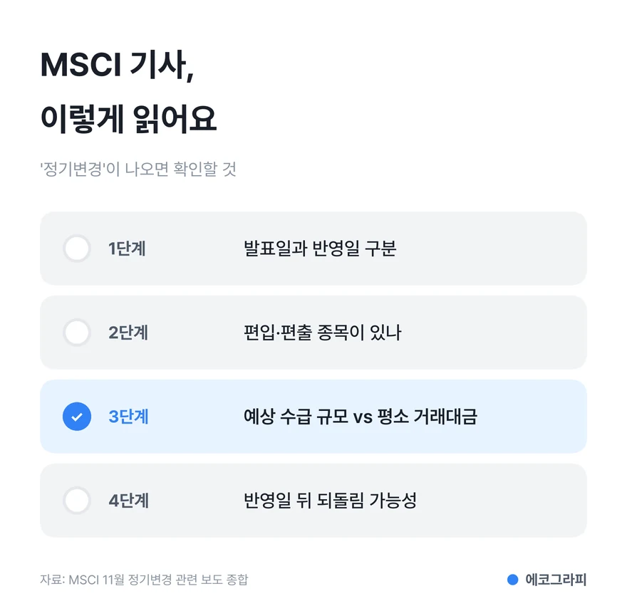

다음 주 증시 일정 기사엔 "30일 MSCI 정기변경 반영"이라는 줄이 빠지지 않아요. 이번 주 코스피가 하루 4~6%씩 오르내린 뒤라, 장 마감 직전 큰 주문이 몰리는 날이 하나 더 있다는 뜻으로 읽혀요. 이번 주 시장 흐름은 오늘 아침 시황에 정리했어요.
MSCI 리밸런싱: MSCI가 만든 주가지수(신흥국 지수, 한국 지수 등)에 들어갈 종목과 각 종목의 비중을 2·5·8·11월에 정기적으로 다시 정하는 일이에요. 그중 5월과 11월은 반기 변경이라 바뀌는 폭이 큰 편이에요.
MSCI 지수를 그대로 따라가는 펀드(패시브 펀드)는 지수 구성이 바뀌면 똑같이 맞춰야 해요. 그래서 비중이 커진 종목은 사고, 줄어든 종목은 팔아요. 이 주문은 대부분 반영일 장 마감 가격(종가)에 맞춰 나와요. 그래서 정기변경 날 장 막판에 거래가 크게 늘곤 해요.

종목이 새로 들어가거나 빠지지 않아도 비중은 바뀔 수 있어요. 회사가 주식을 새로 발행하거나, 자사주를 사들여 시장에서 실제로 거래되는 주식 비율(유동주식비율)이 달라지면 지수 안의 무게도 달라지기 때문이에요.

MSCI는 한국 시간 11월 12일 아침에 결과를 발표했어요. 대형·중형주로 이뤄진 스탠더드 지수에선 한국 종목의 편입·편출이 없었어요. 소형주 지수에는 케이뱅크·삼현·성호전자·대한광통신·우리기술 5곳이 들어가고, 한화머시너리서비스·오름테라퓨틱·SNT다이내믹스·STX엔진 4곳이 빠져요.
종목 교체가 없는 대신 비중 변화가 관심을 받았어요. 한 증권사는 SK하이닉스의 신흥국 지수 비중이 4.49%에서 4.61%로 높아지면서 약 5,800억 원의 패시브 매수가 들어올 수 있다고 추정했어요. 다만 이는 SK하이닉스 하루 평균 거래대금의 10% 안팎이라 주가 영향은 크지 않을 거라는 분석이 함께 나왔어요. 발표 전에는 반대로 매도를 예상한 추정도 있었던 만큼, 수급 추정치는 '참고용 숫자'로 보는 게 좋아요.
확인할 것: 기사에 나온 예상 수급 규모를 그 종목의 평소 하루 거래대금과 비교해 보세요. 거래대금에 비해 작으면 주가에 주는 영향도 제한적인 경우가 많아요.


코스피200 정기변경은 국내 대표 지수의 종목을 바꾸는 일로, 6월과 12월에 이뤄져요. 국내 ETF가 많이 따라가서 국내 기관 수급에 영향을 줘요. MSCI 선진지수 편입은 종목이 아니라 '한국 시장 전체'의 분류를 신흥국에서 선진국으로 바꾸는 이야기예요. 올해 6월에도 편입이 불발됐어요. 셋 다 이름에 '지수'와 '편입'이 들어가지만, 정기변경은 매번 돌아오는 일정이고 선진지수 편입은 훨씬 큰 구조적 이슈라는 점이 달라요.
미국의 지수 회사예요. 세계 각국 주식을 묶은 지수를 만들고, 많은 글로벌 펀드가 이 지수를 기준으로 투자해요. 한국은 MSCI 신흥국 지수에 들어 있어요.
MSCI 11월 정기변경은 보통 11월 마지막 거래일 장 마감에 반영돼요. 올해는 30일(월)이 그날이고, 바뀐 지수는 12월 1일부터 적용돼요.
아니에요. 미리 기대감이 반영돼 발표 전에 오르고, 반영일 뒤엔 오히려 밀리는 경우도 많아요. 패시브 매수 규모가 거래대금에 비해 작으면 영향도 작아요.
꼭 할 일은 없어요. 반영일 장 막판엔 가격이 크게 흔들릴 수 있다는 점만 알아 두면 돼요. 이 글은 특정 종목 매수·매도를 권하지 않아요.
※ 2026년 11월 기준으로 정리한 글입니다. 세율·제도는 바뀔 수 있으니 거래 전 증권사·국세청 안내를 한 번 더 확인하세요. 특정 종목·상품의 매수·매도 권유가 아닙니다.